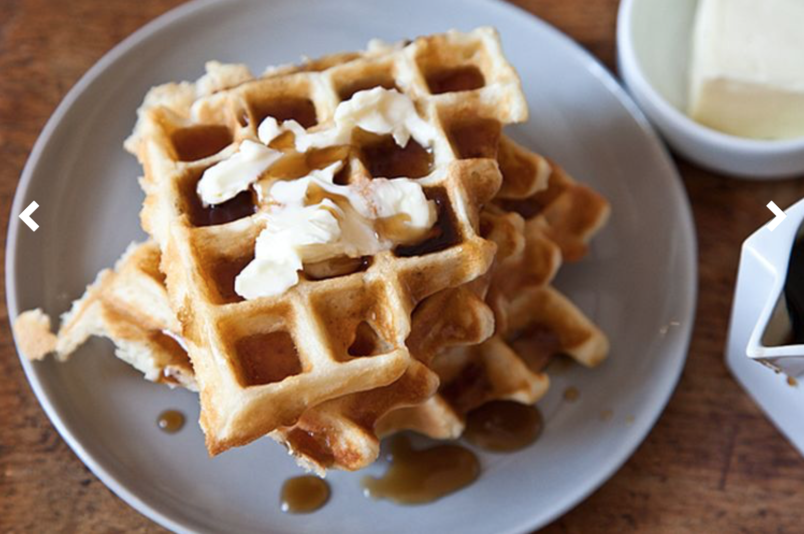

Recipe: Waffles of Insane Greatness
This recipe (originally from Aretha Frankenstein's restaurant in Chattanooga, TN) is the ideal I-just-woke-up-from-a-waffle-dream waffle, a morning-of alternative to the overnight yeasted kind. The cornstarch in the batter helps tamp down gluten formation, making these waffles silky and moist inside with a crust as thin and crisp as an eggshell
Ingredients
- 3/4 cup flour
- 1/4 cup cornstarch
- 1/2 teaspoon baking powder
- 1/4 teaspoon baking soda
- 1/2 teaspoon salt
- 1 cup buttermilk
- 1/3 cup melted butter
- 1 egg
- 1 1/2 teaspoon sugar
- 3/4 teaspoon vanilla extract
Instructions
- Combine dry ingredients
- Combine wet ingredients in a separate bowl
- Gently mix wet ingredients into dry ingredients. Do not overmix.
- Let batter rest for 30 minutes
- Make waffles in heated waffle iron